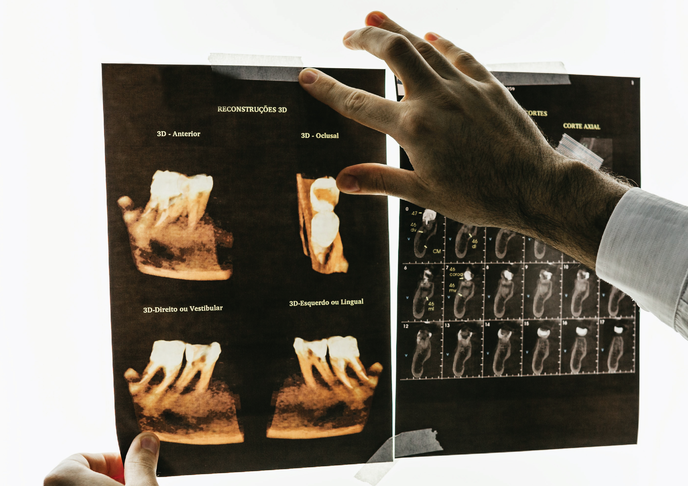

Endodontic treatment

Endodontics is the specialty of dentistry that deals with the diagnosis of diseased dental pulp, its removal and its replacement with endodontic treatment
(root filling).
Dental radiography provides indispensable information in the diagnosis and endodontic treatment itself.
Without treatment, the infection develops at the top of the root forming a purulent infection called an abscess.